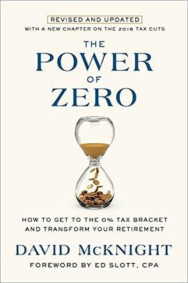
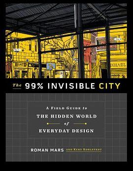

2021年1月
广播发布后不可编辑，所以每条都是那一刻的原话。
2021-01-31 14:08:14
 看过 哆啦A梦：大雄的新恐龙 / 映画ドラえもん のび太の新恐竜 ★★★★☆
看过 哆啦A梦：大雄的新恐龙 / 映画ドラえもん のび太の新恐竜 ★★★★☆
总觉得小学的时候看过，但是实在想不起来大雄的旧恐龙说的是啥了。前1/2还是有点无聊，但是后面剧情开始出现未知的东西就开始有趣了！和《伴我同行》一样要卖一波情怀，但是真香！结尾还有2021年新作预告 =。=
2021-01-31 06:48:21
 想看 曼达洛人 第二季 / The Mandalorian Season 2
想看 曼达洛人 第二季 / The Mandalorian Season 2
感觉太费时间了，先不开坑了
2021-01-31 06:48:05
 看过 曼达洛人 第一季 / The Mandalorian Season 1 ★★★★★
看过 曼达洛人 第一季 / The Mandalorian Season 1 ★★★★★
感觉最近炸鸡哥出镜率有点高
2021-01-30 18:49:33
在看 曼达洛人 第一季 / The Mandalorian Season 1 ★★★★★
xgpu的disney+的free trial nb!
2021-01-30 18:25:36
 想玩 掠食 Prey
想玩 掠食 Prey
2021-01-30 08:38:22

原来悄无声息地发售了。。。
2021-01-30 08:16:26

kinda outdated, but still worth reading
2021-01-30 08:15:39
想读 Becoming Your Own Banker - The Infinite Banking Concept
2021-01-29 12:38:49
 想看 猎鹰与冬兵 / The Falcon and the Winter Soldier
想看 猎鹰与冬兵 / The Falcon and the Winter Soldier
2021-01-29 12:23:11

2021-01-28 22:43:27
转发：

2021-01-27 13:25:15

xgpu nb
2021-01-27 08:59:03
 想看 猎魔人：血源 / The Witcher: Blood Origin
想看 猎魔人：血源 / The Witcher: Blood Origin
2021-01-26 20:05:31
写了《
这个第二季真的有新的剧情嘛？
2021-01-26 19:14:11
在看 中华小当家 第2季 真・中華一番！続編 (2021)
怎么是国内公司出品的 =。= 画面也很不习惯，不过声优可以
2021-01-25 05:56:59
转发：


2021-01-23 12:38:02
 看过 善地 第二季 / The Good Place Season 2 ★★★★★
看过 善地 第二季 / The Good Place Season 2 ★★★★★
2021-01-23 12:37:59
在看 善地 第三季 / The Good Place Season 3
2021-01-23 08:50:49
 玩过 糖豆人: 终极淘汰赛 Fall Guys: Ultimate Knockout ★★★★★
玩过 糖豆人: 终极淘汰赛 Fall Guys: Ultimate Knockout ★★★★★
ps+免费领取，又是一个现象级的游戏，把疫情期间无法举行的跑酷类线下活动搬到游戏世界里了，总共一个摇杆+跳和抓结束，难得见到的简单游戏。不过垃圾索尼不玩了。
2021-01-23 08:49:25

xgpu
2021-01-23 08:48:26
 在玩 控制 Control
在玩 控制 Control
xgpu
2021-01-22 19:25:16
 看过 疾速追杀 / John Wick ★★★★☆
看过 疾速追杀 / John Wick ★★★★☆
从以前的Matrix，到现在的cyberpunk 2077，Keanu出镜率有点高啊。想起来19年的时候，GCS有个客户hot spotting我们的服务，结果发现是在分流John Wick 3，笑死。
2021-01-22 07:17:31
在看 善地 第二季 / The Good Place Season 2
2021-01-22 07:17:01
 看过 善地 第一季 / The Good Place Season 1 ★★★★★
看过 善地 第一季 / The Good Place Season 1 ★★★★★
神奇的奈菲剧
2021-01-21 15:30:43
在看 善地 第一季 / The Good Place Season 1
神奇的奈菲剧
2021-01-20 05:27:56
想看 中华小当家 第2季 真・中華一番！続編 (2021)
卧槽，这是真的？？？
2021-01-18 22:57:19
 读过 撞上天敌二次方漫画全集 ★★★★★
读过 撞上天敌二次方漫画全集 ★★★★★
哇，记得高中当时在飒漫画连载的，后来发现断更了哎。
2021-01-17 16:37:23

神奇的书
2021-01-16 13:55:11
 看过 人间课堂 / 인간수업 ★★★★★
看过 人间课堂 / 인간수업 ★★★★★
感觉有点像绝命毒师，无论是剧情还是结局，不过这个结局有点开放，但是我很不喜欢啊，男主到结尾了还没跟女主明说。看完了还是不知道男主开始想攒9000万干啥。女主人设挺喜欢的，把整个剧带成了头脑犯罪。每一集结尾收的都不错，看了停不下来。
2021-01-15 23:14:01
在看 人间课堂 / 인간수업
很猎奇，但是竟然是一个悬疑片，女主好像汤唯？
2021-01-15 17:13:20
 转发：仙剑奇侠传七
转发：仙剑奇侠传七
2021-01-15 12:54:34
在玩 仙剑奇侠传七
试玩版来玩玩
2021-01-14 20:31:49
 看过 威洛比家的孩子们 / The Willoughbys ★★★☆☆
看过 威洛比家的孩子们 / The Willoughbys ★★★☆☆
被音乐圈粉，但是电影非常一般，全剧也只有这一首歌《I choose》
2021-01-14 19:51:58

2021-01-14 19:51:49

2021-01-12 11:56:01

Finding Nevernland 音乐圈粉
2021-01-11 17:56:58

貌似改动还挺多，考虑视频通关一下 BV1TE41187Gk
2021-01-11 12:50:07
又一次被音乐圈粉了
2021-01-11 06:16:50
想看 人间课堂 / 인간수업
Extracurricular 中文名原来是这个
2021-01-10 22:54:45

2021-01-09 21:11:21
 想玩 真女神转生3 夜曲 高清复刻版 真・女神転生III-NOCTURNE HD REMASTER
想玩 真女神转生3 夜曲 高清复刻版 真・女神転生III-NOCTURNE HD REMASTER
如坑女生转生系列
2021-01-09 20:57:46
 玩过 女神异闻录5 ペルソナ5 ★★★★★
玩过 女神异闻录5 ペルソナ5 ★★★★★
P5天下第一果然不是盖得！通关的第一个真女神转生系列作品，游戏界面耳目一新，心想仙剑要是能做出这种天马行空的UI界面，剧情是shi也不会觉得无聊，游戏音乐也真是太棒了，尤其是从狮童正义开始，剧情很棒，一直反转，也有现实意义，支线设计也是很棒，一个个小故事，很有玩火纹风花雪月的感觉，ps5上顶着30帧打了70+小时，故事内容真的丰富啊！2d动漫+3d结合，感觉仙剑6就是参考的这个思路，但是做的贼烂。看下周五仙剑7试玩如何吧。
2021-01-09 07:27:15
 看过 尽管我们的手中空无一物 / 僕らの手には何もないけど、 ★★★★★
看过 尽管我们的手中空无一物 / 僕らの手には何もないけど、 ★★★★★
好多年前看的，突然知道了名字
2021-01-06 10:51:56

2021-01-05 11:51:24
 想看 四个春天
想看 四个春天
2021-01-04 21:09:33
 想看 2021年维也纳新年音乐会 / Neujahrskonzert der Wiener Philharmoniker 2021
想看 2021年维也纳新年音乐会 / Neujahrskonzert der Wiener Philharmoniker 2021
2021-01-04 20:51:02

2021-01-04 20:42:17

musical
2021-01-04 20:32:40

2021-01-02 21:56:08
 玩过 在我们当中 Among Us ★★★☆☆
玩过 在我们当中 Among Us ★★★☆☆
感觉不是很适合我，玩法很简单，地图也足够大可以有很多可能性 =。= 但是玩起来感觉是小透明，总有那几个dominated的人带风向
2021-01-02 18:40:59
 看过 突击莉莉 / アサルトリリィ BOUQUET ★★★★☆
看过 突击莉莉 / アサルトリリィ BOUQUET ★★★★☆
终于完结了，设定非常讨喜，OP和ED也很有感觉，剧情略弱智，不过作为泡面番还是值得一看
2021-01-01 19:01:06
 想玩 月姬-A piece of blue glass moon- Tsukihime: A piece of blue glass moon
想玩 月姬-A piece of blue glass moon- Tsukihime: A piece of blue glass moon
2021-01-01 18:52:20
 想看 流浪地球2
想看 流浪地球2
原来不是2021年啊